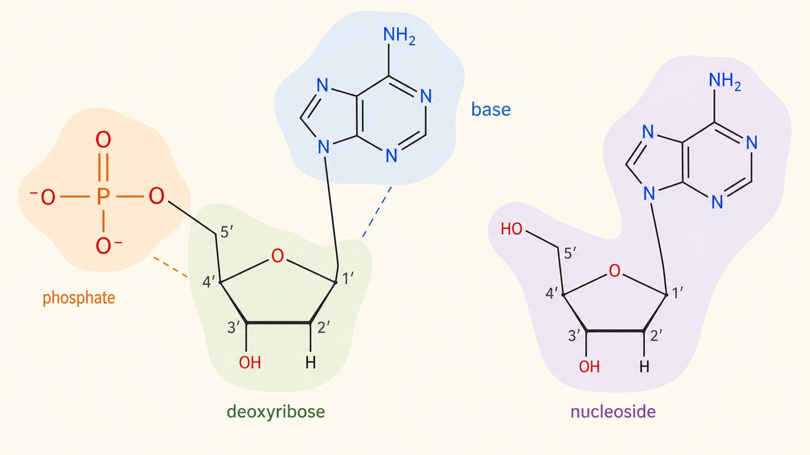
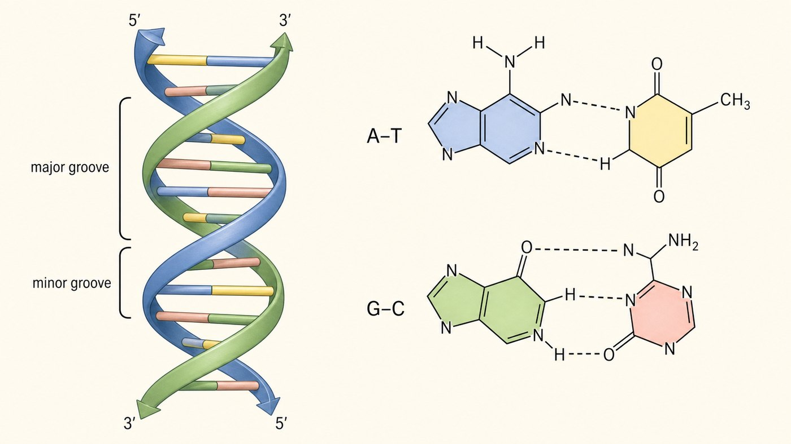

第 11 週
Nucleotide và nucleic acid
Bẫy: base có 2 nghĩa
酸鹼的鹼。
Tuần 2: base (acid-base)
含氮鹼基。A T G C。
Tuần này: base nitrogen
看到這週的 base → 想「A T G C」,不是酸鹼。
Bẫy: DNA vs ADN
DNA、RNA、gene。
SGK 2018: DNA/RNA/gene
ADN、ARN、gen。
Cũ/Y khoa: ADN/ARN/gen
Từ vựng · 不用背,看過就好
| 中文 | Tiếng Việt | English | 中文 | Tiếng Việt | English |
|---|---|---|---|---|---|
| 核苷酸 | Nucleotide | Nucleotide | 雙螺旋 | Chuỗi xoắn kép | Double helix |
| 核苷 | Nucleoside | Nucleoside | 鹼基配對 | Sự bắt cặp base | Base pairing |
| 含氮鹼基 | Base nitrogen | N base | 互補 | Bổ sung | Complementary |
| 嘌呤 | Purine | Purine (A,G) | 反平行 | Đối song song | Antiparallel |
| 嘧啶 | Pyrimidine | Pyrimidine (C,T,U) | 基因 | Gene | Gene |
嘌呤 = 雙環(A、G)。嘧啶 = 單環(C、T、U)。
3 phần của nucleotide
A T G C (U)
Base
去氧核糖 / 核糖
Đường 5C
接在 5' 碳
Phosphate

Nucleoside vs nucleotide
鹼基 + 醣。
Base + đường
核苷 + 磷酸。
Nucleoside + phosphate
Chuỗi xoắn kép

A 配 T(2 鍵),G 配 C(3 鍵)。
A-T (2 liên kết), G-C (3 liên kết).
Quy tắc bắt cặp
兩個氫鍵。
2 liên kết hydrogen
三個氫鍵。
3 liên kết hydrogen
Viết mạch bổ sung
| 原股 (5'→3') | A | T | G | G | C | A | T |
|---|---|---|---|---|---|---|---|
| 互補股 (3'→5') | T | A | C | C | G | T | A |
規則:A↔T,G↔C,而且方向相反。
知道一股,就知道另一股。這叫互補。
3 khác biệt
| DNA | RNA | |
|---|---|---|
| 醣 | 去氧核糖(少一個 O) | 核糖 |
| 鹼基 | 有 T(胸腺嘧啶) | 用 U 代替 T |
| 股數 | 雙股 | 通常單股 |
Vì sao học cái này
你學過的蛋白質。胺基酸序列都由 DNA 決定。第 5 週的鐮刀型貧血。那個錯就錯在 DNA。
Lỗi hồng cầu liềm bắt nguồn từ DNA
Bài tập: Đúng hay sai
A 和 G 配對。
G-C 之間有三個氫鍵。
DNA 和 RNA 都用胸腺嘧啶(T)。
DNA 的兩股是反平行的。
寫互補股:5'-A G G T C A T-3' 的互補股是?
下週 · Tuần sau
Năng lượng sinh học
▶ 課前:看詞彙表第 12 週(18 個詞)
Xem trước 18 từ của tuần 12
▶ 小測:下週前 10 分鐘,考今天的詞
Kiểm tra 5 câu
▶ 提示:第 6 週活化能回來了。今天 ΔG 正式登場
Gợi ý: ΔG chính thức xuất hiện